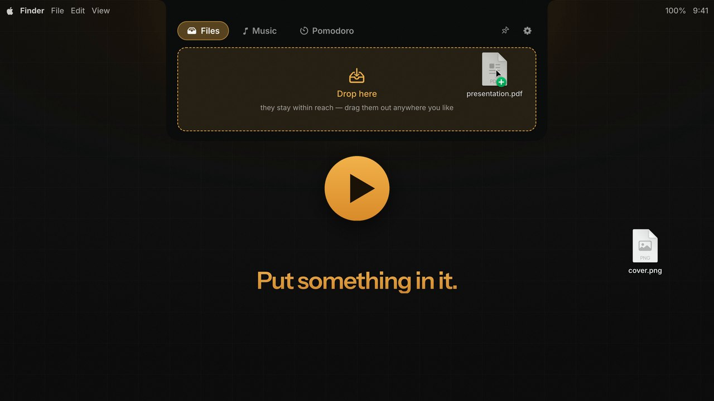

A shelf for files
Drag anything onto the notch and it stays there. Drag it back out into Mail, Finder, a chat window — wherever it was going next.
Cubby is a little creature living in your Mac's notch. Hover to peek, drop a file to stash it, control your music without leaving what you're doing.
macOS 14 or later · Apple silicon & Intel · nothing to set up
HoverTap the black bar — or drop a file on it ↵ to open, Esc to close
This is the real behaviour, running in your browser. Drop a file on the bar and it lands on the shelf — nothing leaves this page.

All of Cubby in 23 seconds — sound on.
What lives in there
No dashboard, no widget zoo. Cubby does what you actually reach for at the top of the screen.
Drag anything onto the notch and it stays there. Drag it back out into Mail, Finder, a chat window — wherever it was going next.
Apple Music: artwork, play/pause, skip, and a scrubber that actually follows your finger. No app switch, no Now Playing detour.
Closed, the notch grows ears: cover art and play/pause, or the Pomodoro countdown while it runs. Pin the tab you want, or let Cubby choose.
Set your durations and start a session. When a phase ends, the notch opens by itself; the next one starts when you say so. Install it from the Marketplace in Settings.
No notch on your Mac? Cubby draws its own — a small strip at the top-center of the screen that behaves exactly the same.
Install
Download it, drop it in Applications, and the notch is yours. There is nothing else to configure.
Rather build it yourself? The steps are in the README.
Grab the latest .dmg from the releases page.
Then open it — Cubby appears as a small face in the menu bar, never in the Dock.
On the first launch only, macOS asks for a confirmation: System SettingsPrivacy & SecurityOpen Anyway
Coming next
Files, Music and Pomodoro are in. New panels install from the Marketplace in Settings — here is what is next in line.
Current weather at a glance.
Your Spotify, right next to Apple Music.
Your next event, always visible.
Free, open source, and out of your way.